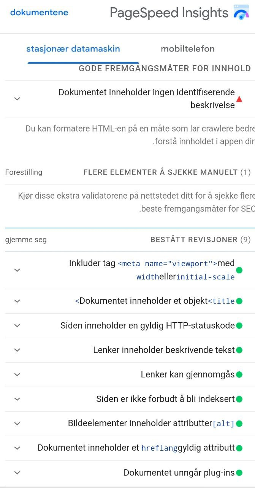

Analyse på nettsider
I denne artikkelen vil jeg vise måter å analysere nettstedet mitt i form av SEO, UU og heuristisk evaluering
I disse dager har det blitt viktig å analysere nettsteder og velge søkeordene som publikum søker etter.
I tillegg hjelper analysen oss til å kjenne til hullene som ikke er nyttige på siden vår, og derfor kan vi finne løsninger og atferd for å forbedre vår nettsted for å hjelpe dens spredning
SEO analysa
Det er en tosidig mynt, hvor den første siden er å vite hva brukerne søker etter på Internett, mens den andre siden er å presentere denne informasjonen på en måte som søkemotorer kan finne og forstå slik at de kan levere den til brukeren.
¤ Ved å analysere sidene fant jeg ut at alle sidene deler de samme egenskapene, for eksempel (meta description mangler, tittelen er kort, og den skal være lengre og passende for siden. https://freetools.seobility.net
¤ Språket på alle sider er passende for innholdet, bortsett fra hovedsiden som må endres.
¤ heading H1 ser ut til å være kort og bør være litt lengre, men headingstrukturen viser godt
¤ når jeg bruker verktøy på nettsiden https://ui.dev/amiresponsive Jeg fant ut at nettstedet mitt passer for alle skjermer unntatt desktop, så jeg må bruke MediaQuery for å fikse dette
¤ på nettsiden viser mangler på sosiale nettverk
Ved bruk av sosiale delingsverktøy øker det sjansen for at siden sprer seg mer, så dette må fikses.
Tilgjengelighet for mobile :når det gjelder kontrast Bakgrunnen og fargene har ikke nok kontrast og de merkede elementene er ikke ordnet i en sekvensiell synkende rekkefølge
¤ Gjennom nettstedet https://pagespeed.web.dev så jeg revisjonsmerkene for seo, det var bra, siden lenkene kan gjennomgås, dokumentene er lesbare og siden er ikke forbudt å indeksere
¤ Klikkmål har en størrelse på rundt 80 %, noe som virker ganske passende

UU analysa
¤ Målet med det universell utforming er å gjøre siden enkel å bruke og kompatibel med alle uten forutgående erfaring. Derfor kan jeg ved å analysere den omfattende utformingen av siden min finne måter å gjøre bruken av siden min enkel og kompatibel med alle.
¤ Da jeg har analysert siden min med de riktige verktøyene, fant jeg ut at hovedsiden ikke dekket WCAG3.1.1-kravene, noe som betyr at språkkoden ikke ble brukt godt.
¤ Også sidetittelen var ikke klar og beskrev ikke innholdet godt
gjennom denne nettsiden https://achecks.ca Det ser ut til at siden ikke formidler alt-teksten den samme informasjonen som bildet, og noen bilder inneholder ikke alt-tekst.
Kontrastforholdet mellom teksten og bakgrunnen er minst 4,5:1.https://www.uutilsynet.no
¤ Kontrasten mellom bakgrunnsfarger, tekster og knapper oppfyller alle WCAG-kravene, siden skriftene er store, noe som gjør det lettere for brukere å lese og forstå innholdet godt.
Heuristisk evaluering
Målet med denne siden er å åpne veien for at brukerne får en tydelig opplevelse, enkel og forståelig informasjon, og å gi dem en rask responsside som passer for mobile enheter, men noen problemer kan vises når du bruker en desktop.
Skriftstørrelsen og fargen er veldig god og tydelig og tilpasser seg størrelsen på skjermene samt at innholdet er kort og forståelig og sidene er enkle å bruke og møter dermed behovene til alle brukere med eller uten erfaring.